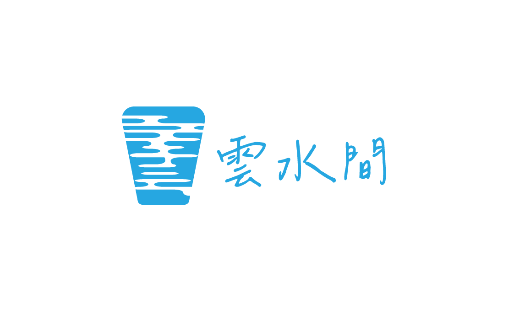
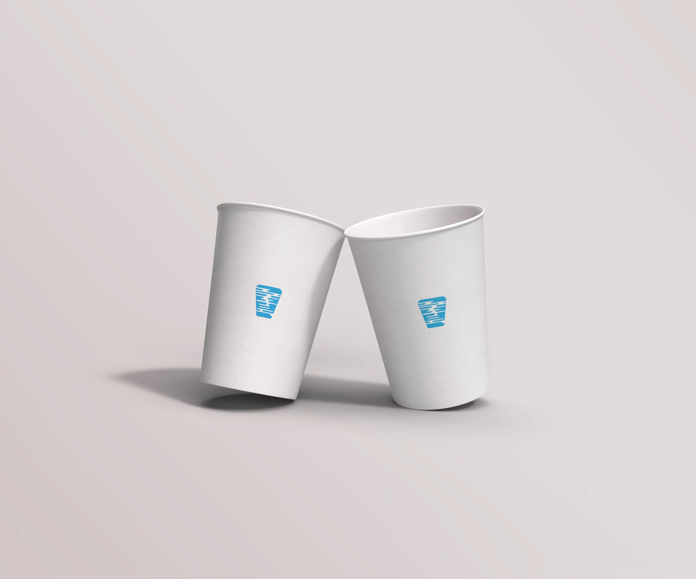

02 / INTERACTIVE WEB
雲水間
讓日常，在雲水之間慢慢沉澱

在雲與水之間
留一段慢下來的空白
雲水間取自自然中最輕、最流動的兩種狀態。品牌不以強烈裝飾堆疊視覺，而是透過留白、柔和流線與低飽和色彩，讓每一次接觸都像進入一段安靜的間隙
識別以雲霧般的弧線與水流的延展感為基礎，將「流動」轉化為可辨識的視覺語言



02 / INTERACTIVE WEB
讓日常，在雲水之間慢慢沉澱

雲水間取自自然中最輕、最流動的兩種狀態。品牌不以強烈裝飾堆疊視覺，而是透過留白、柔和流線與低飽和色彩，讓每一次接觸都像進入一段安靜的間隙
識別以雲霧般的弧線與水流的延展感為基礎，將「流動」轉化為可辨識的視覺語言
